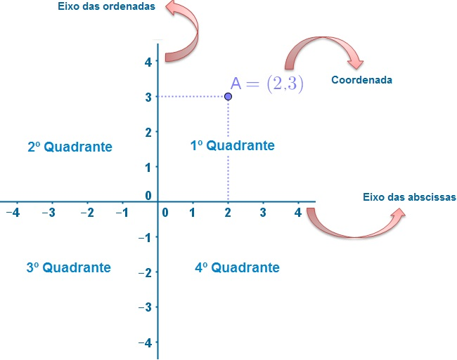
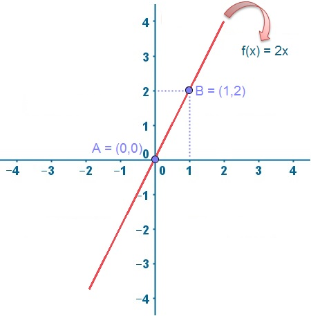
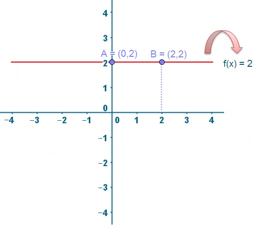
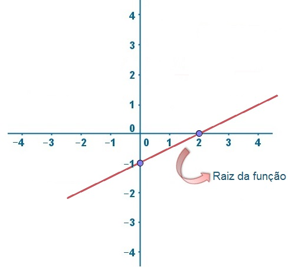
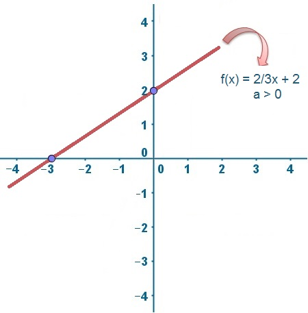
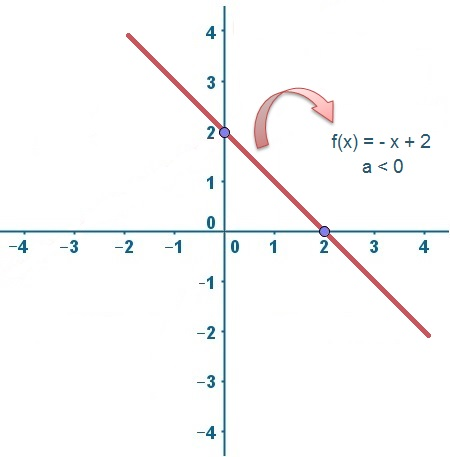
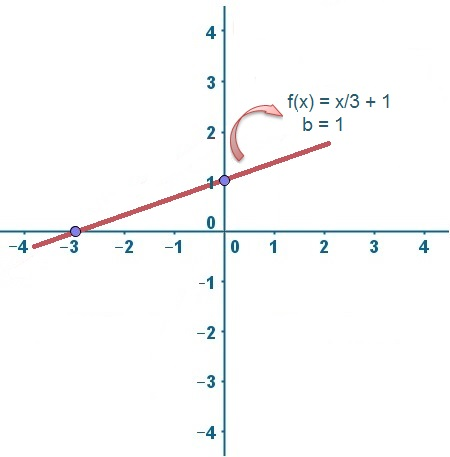

Introdução
Introdução.
Vamos começar analisando um exemplo para entendermos
um pouco mais o conceito de função de primeiro grau.
Resolução.Valor = 1,5 X Distância percorrida.
R$15,00
Agora imaginemos que a bandeira da corrida (valor a ser pago independente da distância) é de R$2,
qual seria o valor que Alexandre pagaria?
Resolução.
Valor = (1,5 X Distância percorrida) + Bandeira.
R$17,00
Teste você mesmo.
Bandeira:
Quilômetro:
Distância:
Definição
Definição.
Chama-se função polinominal do primeiro grau, ou função afim, qualquer função f de |R em |R dada por uma
lei da forma f(x) = avezes x + b, em que a e b são números reais dados a≠0.
vezes x + b, o número a é chamado de coeficiente de x e o número b é chamado termo constante ou
independente.
Exemplos:
Função
Coeficiente de x
Constante independente
f(x) = 2x + 3
2
3
f(x) = 4x + 7
4
7
f(x) = 13x
13
0
Gráfico cartesiano
Gráfico cartesiano.
É um dos fatores mais importantes para entender a matéria de função de 1º grau.

Casos particulares
Casos particulares.
Função linear: acontece quando b = 0, assim a lei de formação fica f(x) = a vezes x, com f: R -> R.
Nesse caso a reta do gráfico intercepta a origem do eixo cartesiano (ponto x=0 y=0).

Função constante: acontece quando a = 0, assim a lei de formação fica f(x) = b. com f:R -> R.
É importante lembrar que essa não é uma função afim, já que o a não é diferente de 0

Raiz da equação de 1º grau
Raiz da equação de 1º grau.
A raiz da equação de 1º grau é o número real X em que a reta cruza o eixo das abcissas (Y= 0).
Ela é dada pela solução da função f(x) = avezes x + b,
portanto x = menos -b ÷ a.

Coeficiente da função afim e inclinação da reta
Coeficiente da função afim e inclinação da reta.
O coeficiente de x indicado pela letra (a) também é chamado de coeficiente angular, já que ele define a inclinação da reta
no gráfico y = a vezes x + b.


O termo constante indicado pela letra (b) também é chamado de coeficiente linear,
o valor dele representa o valor de Y em que a reta intercepta o eixo da ordenadas.

Nos baseamos no livro Matemática volume único para formular a teoria.
FUNÇÃO Afim. In: IEZZI, Gelson et al. Matemática volume único .
5º. ed. São Paulo - SP: Atual Editora, 2011. cap. 4, p. 56-72. v. Único.